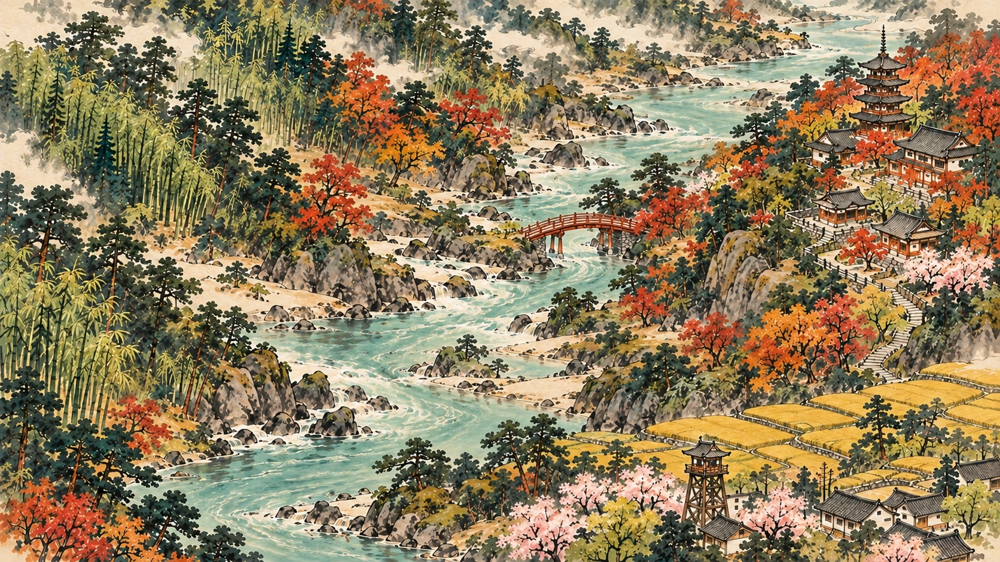
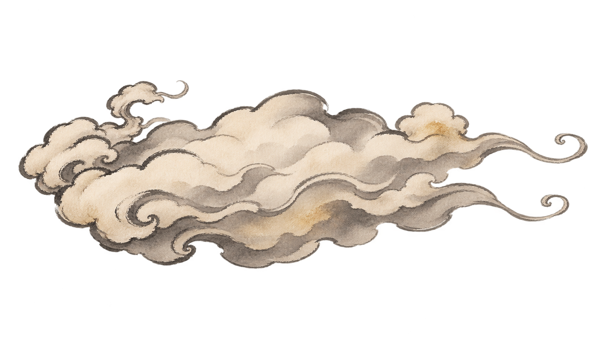
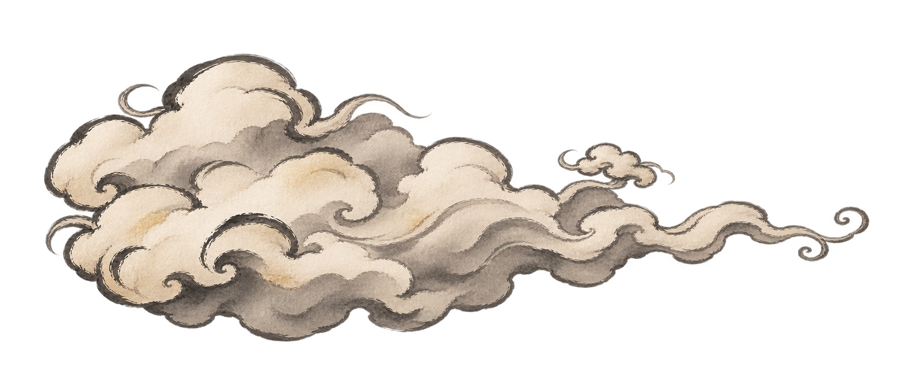
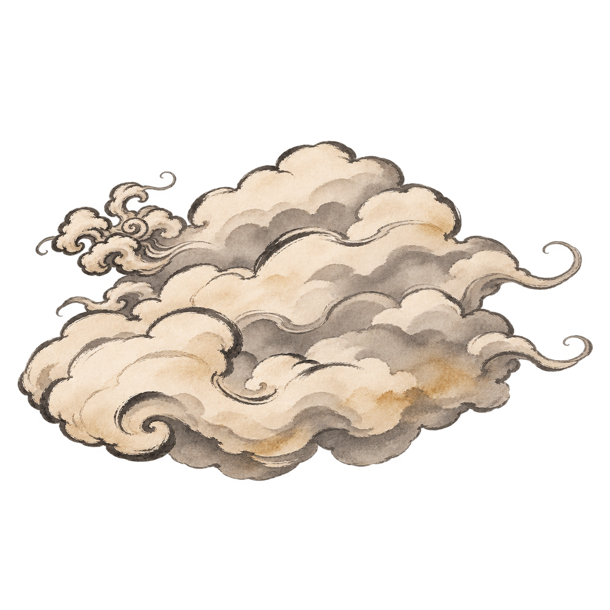
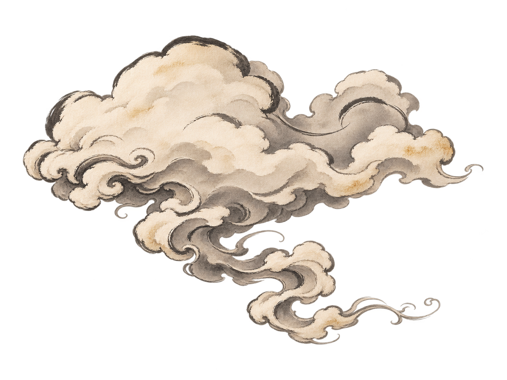
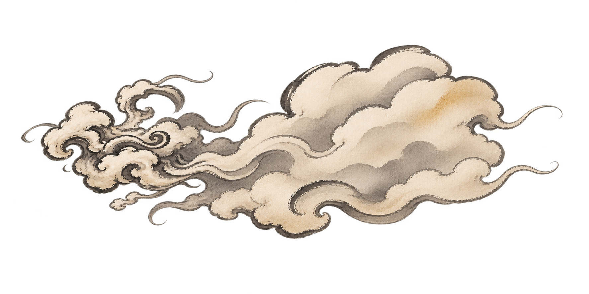
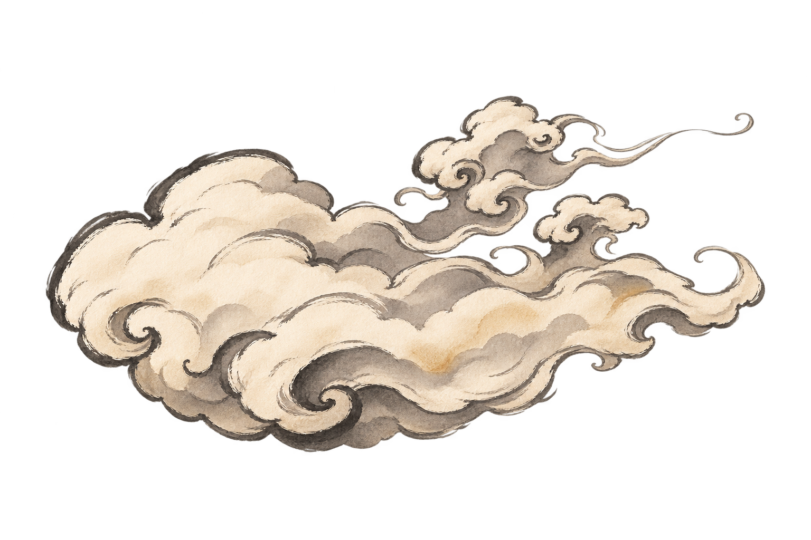

Loading six cloud layers…
The preview starts at 76% during the exit, matching the point where the old cut edges were exposed. Press Play full sweep to watch the whole passage, or drag Progress in either direction. Closed frame shows the overlap; Exit detail returns to the trailing silhouettes.
01 · rear
Rear upper cloud
A complete upper cloud with quiet outlines and two finished trailing curls.
02 · rear
Rear low cloud
A squat, bottom-heavy cloud with a rounded underside and fully visible tail.
03 · middle
Middle complete cluster
A dense, complete cloud cluster with a large low billow and tiny high tangle.
04 · middle
Middle pendant cloud
A whole cloud with a broad upper lobe and an irregular pendant ending in fine curls.
05 · front
Foreground whisker cloud
A tangled leading knot connected to a larger rear cloud with a finished perimeter.
06 · front
Foreground low billow
A full ivory billow with strong brush contours, small upper cloud heads and complete whiskers.